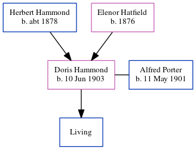

Doris Elizabeth Mary Porter (née Hammond) 1903 -
[ Home ] | [ Calendar ] | [ Surnames Index ] | [ Census Index ] | [ Family History ]The child of Herbert Hammond (a marine engine fitter and metal turner) and Elenor Hatfield, Doris Hammond, the fourth cousin once-removed on the father's side of Nigel Horne, was born in Folkestone, Kent, England on Jun 10, 19031,2 and. She married Alfred Porter (with whom she had 1 surviving child, Antony J) in Elham, Kent, England around May 19263.
During her life, she was living at Richmond Street in Folkestone on Apr 2, 19111; and at 32 Burrow Road in Folkestone on Sep 29, 19392.
Parents
- Herbert John was born c. 1878
- Elenor Elizabeth was born in 1876
Citations
- 1911 Census for England & Wales - Findmypast (was age 7 and the daughter of the head of the household)
- 1939 Register - Findmypast (was the wife of the head of the household)
- England & Wales Marriages 1837-2005 - Findmypast
Media
1939 Register - TNA/R39/1717/1717D/017/11
England & Wales marriages 1837-2005 - BMD/M/1926/2/AZ/000489/075
Family Tree
Generated by ged2site. Last updated on Jun 11, 2024